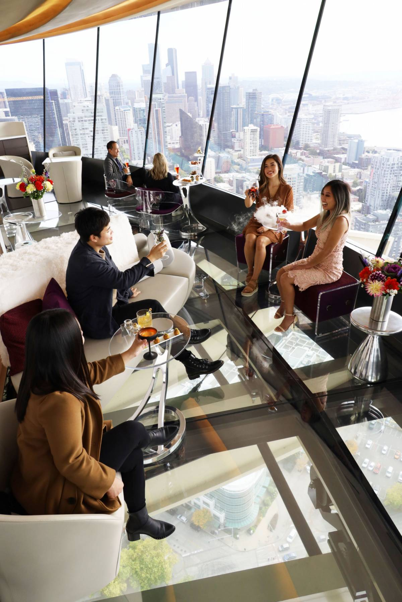
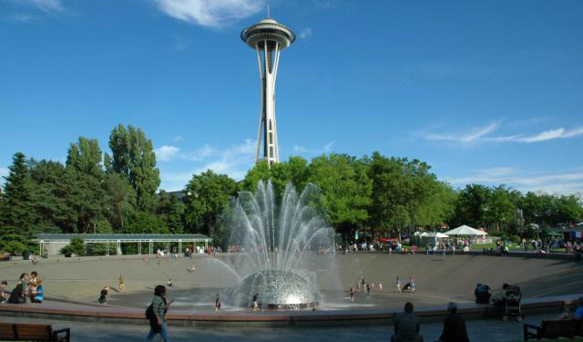
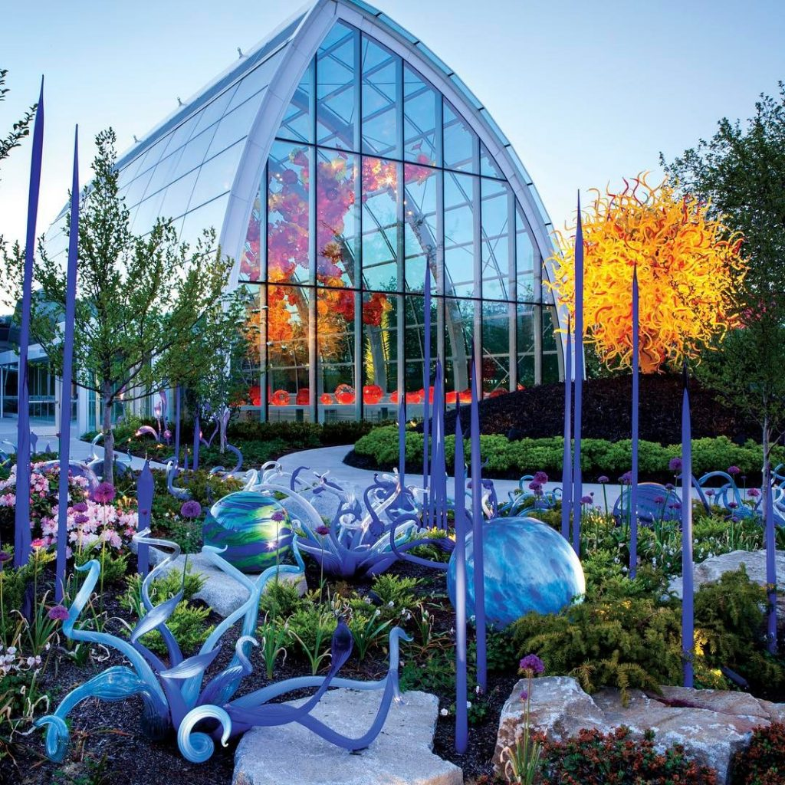

1 / 3

The Loupe Lounge
Orbit a while on the world’s first and only revolving glass floor for a cocktail experience like nothing else around. Perched 500 feet above the city with unmatched views, The Loupe Lounge serves up showstopping mixology paired with tastes of the Pacific Northwest.
2 / 3

Seattle Center
It is the place where the city's biggest festivals, concerts, film screenings and theatrical performances are held. Follow this self-guided walk to contemplate the futuristic buildings, take in the festive atmosphere, and wonder what it was like during the World's Fair.
3 / 3

The Chihuly Garden
Chihuly Garden and Glass provides a look at Chihuly’s inspiration and influences and brings together many of the elements of his work, including Drawings, signature glass series, large architectural installations and his personal collections.
❮
❯